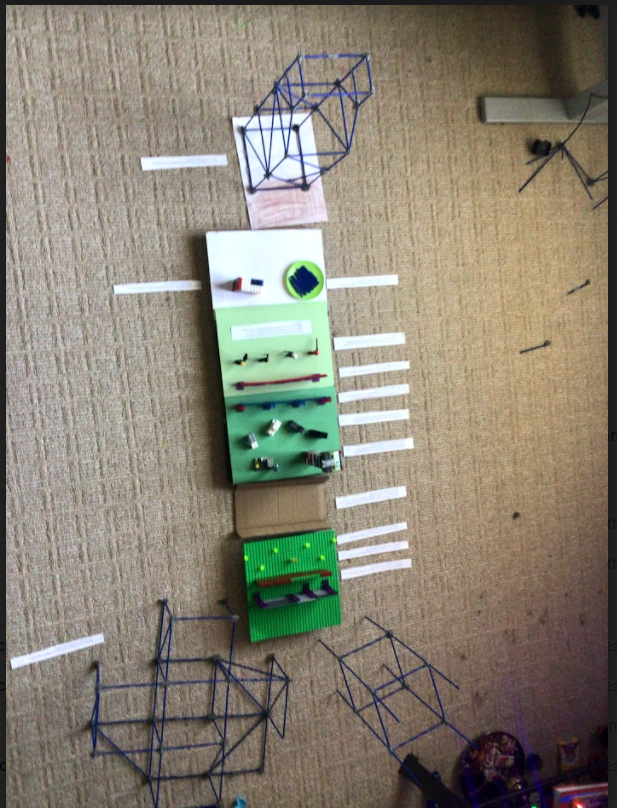

Berlin Wall: This wall was built by the German Democratic Republic on August 13, 1961. It was built to separate the East Germans from the West Berliners. It was removed in 1989 and the people could freely leave the country.
Barbed Wire Fence: This is the first and oldest part of the Berlin Wall. This part of the wall is made of barbed metal wire.
Outer Wall: This is a normal, simple wall made of bricks and stone. This wall was covered in graffiti the Westerners made.
Car Trench: The Car Trench was a trap for anyone who tried to escape by ramming the car in. If anyone made it past the wall, the car would be trapped in the ditch shown in the model.
Guard Watchtowers: The Guard Watchtowers were a building that helped the Grenzers to spot anyone who tried escaping. It also helped see if anyone was doing anything suspicious in the GDR.
Inner Wall: The inner wall is the wall on the Eastern side which was plain and colorless, unlike the Outer Wall.
Anti-Tank Obstacles: These tank obstacles were built to prevent war or violent activity on both sides just after WWII.
Grenztruppen: The Grenztruppen ( or Grenzers ) were guards of the Berlin Wall, to make sure no one crossed it. One of the Grenzers was Officer Muller.
Guard Dogs: These dogs were highly trained in being aggressive and reporting strangers. They were the ones who found Papa’s tunnel.
Low-Tension Electrical Fence: The electrical fence was one of the latest parts of the Berlin Wall. The fence consists of a loose, wired fence that has been charged with hundreds of volts.
Buildings: The buildings resemble the technological and industrial advancements in the West side of Berlin.
Gerta’s Apartment: This is where Gerta’s family live, and where Aldous and Dominic Lowe used to stay.
Welcome Building: This is where Gerta started digging to the west starting from the Air Raid Shelter beneath it.
Lake: This is where Gerta does all the laundry because she can’t do it when she is digging and gardening with Fritz.